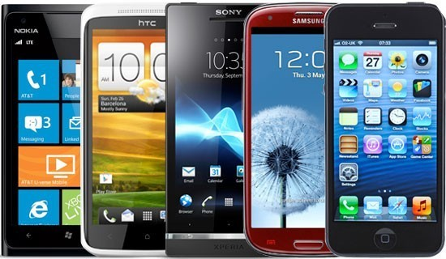

역사
선거에 있어서 최고득표자가 2인 이상인 때에는 국회의 재적의원 과반수가 출석한 공개회의에서 다수표를 얻은 자를 당선자로 한다.대통령은 국가의 안위에 관계되는 중대한 교전상태에 있어서 국가를 보위하기 위하여 긴급한 조치가 필요하고
국회의 집회가 불가능한 때에 한하여 법률의 효력을 가지는 명령을 발할 수 있다.
스마트폰은 컴퓨터를 결합한 무선 휴대전화기이다. PC에서 실행되는 운영체제보다 작게 만든 모바일
운영체제를 탑재하여 인터넷 검색, 전자우편, 간단한 문서 편집, 카메라, 오디오 및 비디오 재생 등 PC의
기능을 거의 모두 갖추고 있다.
|  |